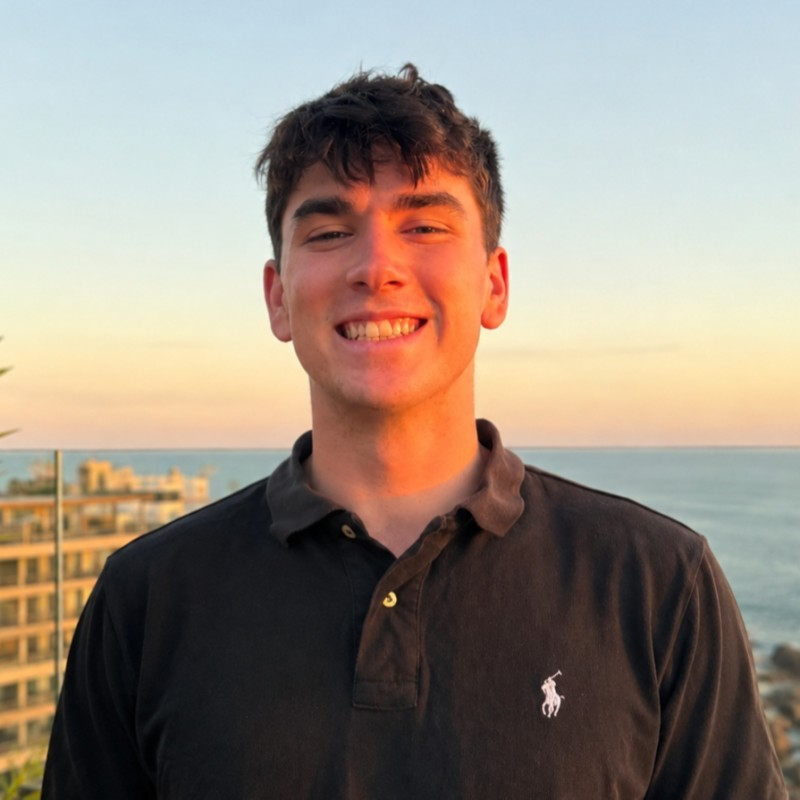

Tank cleaning robot
Contributing to an inspection tank cleaning robot through CAD updates, 3D-printed component holders, assembly, testing, and practical prototyping.
VIEW PROJECT DETAILS ↗[Your introduction goes here.]

A selection of projects that reflect how I learn: get hands-on, test an idea, and make it better.
Contributing to an inspection tank cleaning robot through CAD updates, 3D-printed component holders, assembly, testing, and practical prototyping.
VIEW PROJECT DETAILS ↗Taking a hands-on approach to troubleshooting and repair, from cooling system work to replacing components and restoring interior details.
VIEW PROJECT DETAILS ↗Wired a radio from a junk car and reused car speakers to build a working toolbox speaker, using wiring diagrams to solve the connections.
VIEW PROJECT DETAILS ↗Designed a keyboard and a hardwired numpad combination, bringing an everyday interface to life through a custom build.
VIEW PROJECT DETAILS ↗I'm Nolan Henwood, an engineering student at the University of Washington with interests in mechanical design, manufacturing, robotics, and automotive engineering.
I like breaking complex problems into smaller pieces, learning what I need along the way, and improving a design by building and testing it. Outside the lab, I've also taken on leadership roles with Delta Chi and organized events with ASME.
Interested in engineering, design, or a project? I'd be happy to connect.